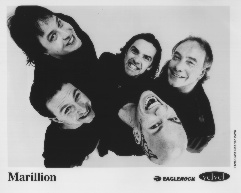

The main progressive band of the eighties, that seems to have lost quite a bit of their following because of albums like Radiation. Personally I find their more modern approach quite refreshing, although I have to admit liking their earlier works such as Brave and Seasons End more as albums. It has to be said that the band continues to put out jewel tracks like Three Minute Boy, This Strange Engine and One Fine Day. A solution to their problem might be to simply start all over with a different name, because to my feeling the name Marillion scares off those people who might in fact be interested to hear the music. Fans of Porcupine Tree and Radiohead for instance.